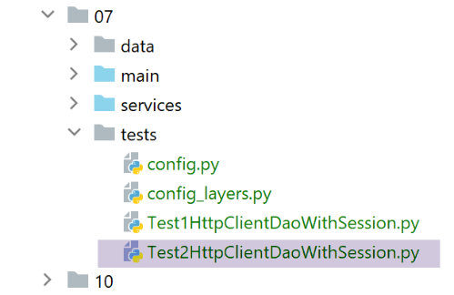

31. Clientes web para os serviços jSON e XML da versão 12
Vamos escrever três aplicações de consola clientes dos serviços jSON e XML do servidor web que acabámos de criar. Retomamos a arquitetura cliente/servidor da versão 11:

Iremos escrever três scripts de consola:
- os scripts [main] e [main3] utilizarão a camada [métier] do servidor;
- o script [main2] utilizará a camada [métier] do cliente;
31.1. A estrutura de diretórios dos scripts dos clientes
A pasta [http-clients/07] é obtida inicialmente através da cópia da pasta [http-clients/06]. Em seguida, é modificada.

- em [1]: os dados utilizados ou criados pelo cliente;
- para [2], a configuração e os scripts da consola do cliente;
- em [3], a camada [dao] do cliente;
- em [4], a pasta de testes da camada [dao] do cliente;
31.2. A camada [dao] dos clientes


31.2.1. Interface
A camada [dao] implementará a seguinte interface [InterfaceImpôtsDaoWithHttpSession]:
from abc import abstractmethod
from AbstractImpôtsDao import AbstractImpôtsDao
from AdminData import AdminData
from TaxPayer import TaxPayer
class InterfaceImpôtsDaoWithHttpSession(AbstractImpôtsDao):
# cálculo do imposto por unidade
@abstractmethod
def calculate_tax(self, taxpayer: TaxPayer):
pass
# cálculo do imposto por lotes
@abstractmethod
def calculate_tax_in_bulk_mode(self, taxpayers: list):
pass
# inicialização de uma sessão
@abstractmethod
def init_session(self, type_session: str):
pass
# fim da sessão
@abstractmethod
def end_session(self):
pass
# autenticação
@abstractmethod
def authenticate_user(self, user: str, password: str):
pass
# lista de simulações
@abstractmethod
def get_simulations(self) -> list:
pass
# eliminar uma simulação
@abstractmethod
def delete_simulation(self, id: int) -> list:
pass
# obter os dados necessários para o cálculo do imposto
@abstractmethod
def get_admindata(self) -> AdminData:
pass
Cada método da interface corresponde a um serviço URL do servidor de cálculo de impostos.
- linha 7: a interface estende a classe [AbstractDao], que gere os acessos ao sistema de ficheiros;
A correspondência entre os métodos e os serviços URL é definida no ficheiro de configuração [config]:
# o servidor de cálculo do imposto
"server": {
"urlServer": "http://127.0.0.1:5000",
"user": {
"login": "admin",
"password": "admin"
},
"url_services": {
"calculate-tax": "/calculer-impot",
"get-admindata": "/get-admindata",
"calculate-tax-in-bulk-mode": "/calculer-impots",
"init-session": "/init-session",
"end-session": "/fin-session",
"authenticate-user": "/authentifier-utilisateur",
"get-simulations": "/lister-simulations",
"delete-simulation": "/supprimer-simulation"
}
31.2.2. Implementação
A interface [InterfaceImpôtsDaoWithHttpSession] é implementada pela seguinte classe [ImpôtsDaoWithHttpSession]:
# importações
import json
import requests
import xmltodict
from flask_api import status
from AbstractImpôtsDao import AbstractImpôtsDao
from AdminData import AdminData
from ImpôtsError import ImpôtsError
from InterfaceImpôtsDaoWithHttpSession import InterfaceImpôtsDaoWithHttpSession
from TaxPayer import TaxPayer
class ImpôtsDaoWithHttpSession(InterfaceImpôtsDaoWithHttpSession):
# construtor
def __init__(self, config: dict):
# inicialização do pai
AbstractImpôtsDao.__init__(self, config)
# armazenamento dos elementos de configuração
# configuração geral
self.__config = config
# servidor
self.__config_server = config["server"]
# serviços
self.__config_services = config["server"]['url_services']
# modo de depuração
self.__debug = config["debug"]
# registo
self.__logger = None
# cookies
self.__cookies = None
# tipo de sessão (json, xml)
self.__session_type = None
# etapa de pedido/resposta
def get_response(self, method: str, url_service: str, data_value: dict = None, json_value=None):
# [method]: método HTTP, GET ou POST
# [url_service]: URL de serviço
# [data]: parâmetros do POST em x-www-form-urlencoded
# [json]: parâmetros do POST em JSON
# [cookies]: cookies a incluir na solicitação
# é necessário ter uma sessão XML ou JSON; caso contrário, não será possível processar a resposta
if self.__session_type not in ['json', 'xml']:
raise ImpôtsError(73, "il n'y a pas de session valide en cours")
# início de sessão
if method == "GET":
# GET
response = requests.get(url_service, cookies=self.__cookies)
else:
# POST
response = requests.post(url_service, data=data_value, json=json_value, cookies=self.__cookies)
# modo de depuração?
if self.__debug:
# registo
if not self.__logger:
self.__logger = self.__config['logger']
# a registar
self.__logger.write(f"{response.text}\n")
# resultado
if self.__session_type == "json":
résultat = json.loads(response.text)
else: # xml
résultat = xmltodict.parse(response.text[39:])['root']
# recuperam-se os cookies da resposta, caso existam
if response.cookies:
self.__cookies = response.cookies
# código de estado
status_code = response.status_code
# se o código de estado for diferente de 200 OK
if status_code != status.HTTP_200_OK:
raise ImpôtsError(35, résultat['réponse'])
# retorna-se o resultado
return résultat['réponse']
def init_session(self, session_type: str):
# regista-se o tipo de sessão
self.__session_type = session_type
# URL do serviço
config_server = self.__config_server
url_service = f"{config_server['urlServer']}{self.__config_services['init-session']}/{session_type}"
# execução da consulta
self.get_response("GET", url_service)
…
- linhas 16-34: o construtor da classe;
- linha 19: a classe pai é inicializada;
- linhas 21-28: são guardados alguns dados da configuração;
- linhas 29-34: criam-se três propriedades utilizadas nos métodos da classe;
- linhas 36-82: o método [get_response] extrai o que é comum a todos os métodos da camada [dao]: o envio de um pedido HTTP e a recuperação da resposta HTTP do servidor;
- linhas 38-42: definição dos 5 parâmetros do método [get_response];
- linha 42: note-se que, como o servidor mantém uma sessão, o cliente precisa de ler/enviar cookies;
- linhas 44-46: verifica-se se existe efetivamente uma sessão válida em curso;
- linha 51: caso do GET. Devolvem-se os cookies recebidos;
- linha 54: caso do POST. Este pode ter dois tipos de parâmetros:
- o tipo [x-www-form-urlencoded]. É o caso dos URL, [/calculer-impot] e [/authentifier-utilisateur]. Nesse caso, utiliza-se o parâmetro [data_value] recebido pelo método;
- o tipo [json]. É o caso dos URL e [/calculer-impots]. Nesse caso, utiliza-se o parâmetro [json_value] recebido pelo método;
Também aqui, o cookie de sessão é devolvido.
- linhas 56-62: se estivermos no modo [debug], a resposta do servidor é registada. Este registo é importante porque permite saber exatamente o que o servidor devolveu;
- linhas 64-68: dependendo de se estar no modo JSON ou XML, a resposta de texto do servidor é transformada num dicionário. Tomemos o exemplo do URL [/init-session]:
A resposta jSON é a seguinte:
2020-08-03 11:45:21.218116, MainThread : {"action": "init-session", "état": 700, "réponse": ["session démarrée avec le type de réponse json"]}
A resposta XML é a seguinte:
2020-08-03 11:45:54.671871, MainThread : <?xml version="1.0" encoding="utf-8"?>
<root><action>init-session</action><état>700</état><réponse>session démarrée avec le type de réponse xml</réponse></root>
O código das linhas 64-68 garante que, em ambos os casos, se obtenha em [résultat] um dicionário com as chaves [action, état, réponse];
- linhas 70-72: se a resposta contiver cookies, estes são recuperados. Terão de ser reenviados na próxima solicitação;
- linhas 74-79: se o estado HTTP da resposta for diferente de 200, é lançada uma exceção com a mensagem de erro contida em resultado[’réponse’]. Pode tratar-se de um erro ou de uma lista de erros;
- linhas 81-82: devolve-se a resposta do servidor ao código chamador;
[init_session]
- linha 84: o método [init_session] serve para definir o tipo de sessão (json ou xml) que o cliente pretende iniciar com o servidor;
- linha 86: regista-se o tipo de sessão pretendido na classe. Com efeito, todos os métodos necessitam desta informação para descodificar corretamente a resposta do servidor;
- linhas 88-90: com base na configuração da aplicação, determina-se o método de serviço URL que deve ser chamado;
- linha 93: o serviço URL é consultado. Não se recupera o resultado do método [get_response]:
- se este lançar uma exceção, a operação falhou. A exceção não é tratada aqui e será reenviada diretamente para o código chamador, que encerrará então o cliente com uma mensagem de erro;
- se não lançar uma exceção, significa que a inicialização da sessão foi bem-sucedida;
[authenticate_user]
def authenticate_user(self, user: str, password: str):
# URL do serviço
config_server = self.__config_server
url_service = f"{config_server['urlServer']}{self.__config_services['authenticate-user']}"
post_params = {
"user": user,
"password": password
}
# execução da solicitação
self.get_response("POST", url_service, post_params)
- o método [authenticate_user] serve para autenticar-se junto do servidor. Para tal, recebe as credenciais de ligação [user, password] na linha 1;
- linhas 2-4: determina-se o serviço URL a consultar;
- linhas 5-8: os parâmetros do POST, uma vez que o URL [/authentifier-utilisateur] aguarda um POST com parâmetros [user, password];
- linha 11: a consulta é executada. Mais uma vez, não se obtém a resposta do servidor. É a exceção lançada pelo [get_response] que indica se a operação foi bem-sucedida ou não;
[calculate_tax]
def calculate_tax(self, taxpayer: TaxPayer):
# URL do serviço
config_server = self.__config_server
url_service = f"{config_server['urlServer']}{self.__config_services['calculate-tax']}"
# parâmetros do POST
post_params = {
"marié": taxpayer.marié,
"enfants": taxpayer.enfants,
"salaire": taxpayer.salaire
}
# execução da solicitação
response = self.get_response("POST", url_service, post_params)
# atualização do TaxPayer com a resposta
taxpayer.fromdict(response)
- o método [calculate_tax] permite calcular o imposto de um contribuinte [taxpayer] passado como parâmetro. Este parâmetro é alterado pelo método (linha 15) e constitui, portanto, o resultado do método;
- linhas 2-4: define-se o serviço URL a consultar;
- linhas 6-10: os parâmetros do POST a enviar. Com efeito, o serviço URL do serviço [/calculer-impot] aguarda um POST com os parâmetros [marié, enfants, salaire];
- linhas 12-13: a consulta é executada e a resposta do servidor é recuperada. O URL do serviço [/calculer-impot] devolve um dicionário com as chaves [impôt, décôte, surcôte, réduction, taux] do imposto;
- linha 15: o dicionário [response] obtido é utilizado para atualizar o contribuinte [taxpayer];
[calculate_tax_in_bulk_mode]
# cálculo do imposto em modo em massa
def calculate_tax_in_bulk_mode(self, taxpayers: list):
# deixa-se que as exceções sejam reportadas
# converte os contribuintes numa lista de dicionários
# só se mantêm as propriedades [marié, enfants, salaire]
list_dict_taxpayers = list(
map(lambda taxpayer:
taxpayer.asdict(included_keys=[
'_TaxPayer__marié',
'_TaxPayer__enfants',
'_TaxPayer__salaire']),
taxpayers))
# URL do serviço
config_server = self.__config_server
url_service = f"{config_server['urlServer']}{self.__config_services['calculate-tax-in-bulk-mode']}"
# execução da consulta
list_dict_taxpayers2 = self.get_response("POST", url_service, data_value=None, json_value=list_dict_taxpayers)
# quando existe apenas um contribuinte e se está numa sessão XML, [list_dict_taxpayers2] não é uma lista
# neste caso, transforma-se numa lista
if not isinstance(list_dict_taxpayers2, list):
list_dict_taxpayers2 = [list_dict_taxpayers2]
# atualizamos a lista inicial de contribuintes com os resultados recebidos
for i in range(len(taxpayers)):
# atualização dos contribuintes [i]
taxpayers[i].fromdict(list_dict_taxpayers2[i])
# aqui, o parâmetro [taxpayers] foi atualizado com os resultados do servidor
- linha 2: o método recebe uma lista de contribuintes do tipo TaxPayer;
- linhas 7-13: esta lista de elementos do tipo [TaxPayer] é transformada numa lista de dicionários [marié, enfants, salaire];
- linhas 15-17: define-se o URL de serviço;
- linhas 19-20: executa-se um pedido POST cujo corpo jSON é constituído pela lista de dicionários criada na linha 7. Recupera-se a resposta do servidor;
- linhas 23-24: os testes revelaram um problema quando a sessão é do tipo XML:
- se a lista inicial de contribuintes tiver N elementos (N>1), obtém-se como resultado uma lista de N dicionários do tipo [OrderedDict];
- se a lista inicial tiver apenas um elemento, obtém-se não uma lista, mas um elemento do tipo [OrderedDict];
- linhas 23-24: se estivermos neste último caso (1 elemento), transformamos o resultado numa lista de 1 elemento;
- linhas 25-28: esta lista de dicionários recebidos contém o imposto de cada contribuinte da lista inicial. Atualiza-se então cada um deles com os resultados recebidos;
[get_simulations]
def get_simulations(self) -> list:
# URL do serviço
config_server = self.__config_server
url_service = f"{config_server['urlServer']}{self.__config_services['get-simulations']}"
# execução da consulta
return self.get_response("GET", url_service)
- linha 1: o método solicita a lista das simulações realizadas na sessão atual;
- linha 2: o método devolve a resposta do servidor;
[delete_simulation]
def delete_simulation(self, id: int) -> list:
# URL do serviço
config_server = self.__config_server
url_service = f"{config_server['urlServer']}{self.__config_services['delete-simulation']}/{id}"
# execução da solicitação
return self.get_response("GET", url_service)
- linha 1: o método elimina a simulação cujo identificador é passado;
- linha 7: devolve a resposta do servidor, a lista das simulações restantes após a eliminação solicitada;
[get-admindata]
def get_admindata(self) -> AdminData:
# deixa-se que as exceções sejam transmitidas
# URL do serviço
config_server = self.__config_server
url_service = f"{config_server['urlServer']}{self.__config_services['get-admindata']}"
# execução da consulta
résultat = self.get_response("GET", url_service)
# o resultado é um dicionário de valores do tipo str, se for uma sessão XML
if self.__session_type == 'xml':
# novo dicionário
résultat2 = {}
# converte-se tudo para formato numérico
for key, value in résultat.items():
# alguns elementos do dicionário são listas
if isinstance(value, list):
values = []
for value2 in value:
values.append(float(value2))
résultat2[key] = values
else:
# outros são simples elementos
résultat2[key] = float(value)
else:
résultat2 = résultat
# resultado do tipo AdminData
return AdminData().fromdict(résultat2)
- linha 1: o método solicita ao servidor as constantes fiscais que permitem o cálculo do imposto;
- linha 29: devolve um tipo [AdminData];
- linha 9: recupera-se a resposta do servidor sob a forma de um dicionário. Os testes revelam que existe um problema quando a sessão é do tipo XML: em vez de serem valores numéricos, os valores do dicionário são cadeias de caracteres. Tínhamos assinalado este problema durante a análise do módulo [xmltodict] e constatado que se tratava de um comportamento normal. O [xmltodict] não contém informações de tipos no fluxo XML que lhe é fornecido. Dito isto, neste caso específico, é necessário converter em valores numéricos todos os valores do dicionário recebido. Este contém três listas [limites, coeffr, coeffn] e um conjunto de propriedades numéricas;
- linhas 13-25: criação de um dicionário [résultat2] com valores numéricos a partir do dicionário [résultat] com valores do tipo cadeia de caracteres;
- linha 29: o dicionário [resultat2] é utilizado para inicializar um tipo [AdminData];
31.2.3. A fábrica da camada [dao]
Os nossos clientes serão multithread. Como a camada [dao] é implementada por uma classe com estado de leitura/gravação (= propriedades de leitura/gravação), cada thread deve ter a sua própria camada [dao] ou, em alternativa, é necessário sincronizar o acesso aos dados partilhados entre os threads. Neste caso, optamos pela primeira solução. Utilizamos uma classe [ImpôtsDaoWithHttpSessionFactory] capaz de criar instâncias da camada [dao]:
from ImpôtsDaoWithHttpSession import ImpôtsDaoWithHttpSession
class ImpôtsDaoWithHttpSessionFactory:
def __init__(self, config: dict):
# o parâmetro é memorizado
self.__config = config
def new_instance(self):
# retorna-se uma instância da camada [dao]
return ImpôtsDaoWithHttpSession(self.__config)
31.3. Configuração dos clientes

Os clientes são configurados pelos ficheiros [config] e [config_layers]. O ficheiro [config] é o seguinte:
def configure(config: dict) -> dict:
import os
# etapa 1 ------
# pasta deste ficheiro
script_dir = os.path.dirname(os.path.abspath(__file__))
# caminho raiz
root_dir = "C:/Data/st-2020/dev/python/cours-2020/python3-flask-2020"
# dependências absolutas
absolute_dependencies = [
# pastas do projeto
# BaseEntity, MyException
f"{root_dir}/classes/02/entities",
# InterfaceImpôtsDao, InterfaceImpôtsMétier, InterfaceImpôtsUi
f"{root_dir}/impots/v04/interfaces",
# AbstractImpôtsdao, ImpôtsConsole, ImpôtsMétier
f"{root_dir}/impots/v04/services",
# ImpotsDaoWithAdminDataInDatabase
f"{root_dir}/impots/v05/services",
# AdminData, ImpôtsError, TaxPayer
f"{root_dir}/impots/v04/entities",
# Constantes, intervalos
f"{root_dir}/impots/v05/entities",
# ImpôtsDaoWithHttpSession, ImpôtsDaoWithHttpSessionFactory, InterfaceImpôtsDaoWithHttpSession
f"{script_dir}/../services",
# scripts de configuração
script_dir,
# Logger
f"{root_dir}/impots/http-servers/02/utilities",
]
# definir o syspath
from myutils import set_syspath
set_syspath(absolute_dependencies)
# etapa 2 ------
# configuração da aplicação com constantes
config.update({
# ficheiro dos contribuintes
"taxpayersFilename": f"{script_dir}/../data/input/taxpayersdata.txt",
# ficheiro de resultados
"resultsFilename": f"{script_dir}/../data/output/résultats.json",
# ficheiro de erros
"errorsFilename": f"{script_dir}/../data/output/errors.txt",
# ficheiro de registos
"logsFilename": f"{script_dir}/../data/logs/logs.txt",
# servidor de cálculo de impostos
"server": {
"urlServer": "http://127.0.0.1:5000",
"user": {
"login": "admin",
"password": "admin"
},
"url_services": {
"calculate-tax": "/calculer-impot",
"get-admindata": "/get-admindata",
"calculate-tax-in-bulk-mode": "/calculer-impots",
"init-session": "/init-session",
"end-session": "/fin-session",
"authenticate-user": "/authentifier-utilisateur",
"get-simulations": "/lister-simulations",
"delete-simulation": "/supprimer-simulation"
}
},
# modo de depuração
"debug": True
}
)
# etapa 3 ------
# instanciação das camadas
import config_layers
config['layers'] = config_layers.configure(config)
# efetua-se a configuração
return config
O ficheiro [config_layers] é o seguinte:
def configure(config: dict) -> dict:
# instanciação das camadas da aplicação
# camada [métier]
from ImpôtsMétier import ImpôtsMétier
métier = ImpôtsMétier()
# fábrica da camada DAO
from ImpôtsDaoWithHttpSessionFactory import ImpôtsDaoWithHttpSessionFactory
dao_factory = ImpôtsDaoWithHttpSessionFactory(config)
# retornamos a configuração das camadas
return {
"dao_factory": dao_factory,
"métier": métier
}
- os clientes não terão acesso direto à camada [dao]. Para o obter, terão de passar pela fábrica da camada [dao];
31.4. O cliente [main]

O cliente [main] permite testar os URL e [/init-session, /authentifier-utilisateur, /calculer-impots, /fin-session]:
# aguarda-se um parâmetro JSON ou XML
import sys
syntaxe = f"{sys.argv[0]} json / xml"
erreur = len(sys.argv) != 2
if not erreur:
session_type = sys.argv[1].lower()
erreur = session_type != "json" and session_type != "xml"
if erreur:
print(f"syntaxe : {syntaxe}")
sys.exit()
# configuramos a aplicação
import config
config = config.configure({"session_type": session_type})
# dependências
from ImpôtsError import ImpôtsError
import random
import sys
import threading
from Logger import Logger
# execução da camada [dao] num thread
# «taxpayers» é uma lista de contribuintes
def thread_function(config: dict, taxpayers: list):
# recupera-se a fábrica da camada [dao]
dao_factory = config['layers']['dao_factory']
# cria-se uma instância da camada [dao]
dao = dao_factory.new_instance()
# tipo de sessão
session_type = config['session_type']
# número de contribuintes
nb_taxpayers = len(taxpayers)
# registo
logger.write(f"début du calcul de l'impôt des {nb_taxpayers} contribuables\n")
# inicializa-se a sessão
dao.init_session(session_type)
# autenticação
dao.authenticate_user(config['server']['user']['login'], config['server']['user']['password'])
# cálculo do imposto dos contribuintes
dao.calculate_tax_in_bulk_mode(taxpayers)
# fim da sessão
dao.end_session()
# registo
logger.write(f"fin du calcul de l'impôt des {nb_taxpayers} contribuables\n")
# lista de threads do cliente
threads = []
logger = None
# código
try:
# registo
logger = Logger(config["logsFilename"])
# armazenar na configuração
config["logger"] = logger
# registo de início
logger.write("début du calcul de l'impôt des contribuables\n")
# recuperamos a fábrica da camada [dao]
dao_factory = config["layers"]["dao_factory"]
# cria-se uma instância da camada [dao]
dao = dao_factory.new_instance()
# leitura dos dados dos contribuintes
taxpayers = dao.get_taxpayers_data()["taxpayers"]
# dos contribuintes?
if not taxpayers:
raise ImpôtsError(36, f"Pas de contribuables valides dans le fichier {config['taxpayersFilename']}")
# cálculo do imposto dos contribuintes com vários threads
i = 0
l_taxpayers = len(taxpayers)
while i < len(taxpayers):
# cada thread irá processar entre 1 e 4 contribuintes
nb_taxpayers = min(l_taxpayers - i, random.randint(1, 4))
# a lista de contribuintes processados pelo thread
thread_taxpayers = taxpayers[slice(i, i + nb_taxpayers)]
# incrementa-se i para o thread seguinte
i += nb_taxpayers
# cria-se o thread
thread = threading.Thread(target=thread_function, args=(config, thread_taxpayers))
# adiciona-se à lista de threads do script principal
threads.append(thread)
# inicia-se o thread — esta operação é assíncrona — não se aguarda o resultado do thread
thread.start()
# o thread principal aguarda a conclusão de todos os threads que iniciou
for thread in threads:
thread.join()
# aqui, todas as threads terminaram o seu trabalho — cada uma alterou um ou mais objetos [taxpayer]
# os resultados são guardados no ficheiro jSON
dao.write_taxpayers_results(taxpayers)
# fim
except BaseException as erreur:
# exibição do erro
print(f"L'erreur suivante s'est produite : {erreur}")
finally:
# encerrar o registador
if logger:
# registo de fim
logger.write("fin du calcul de l'impôt des contribuables\n")
# encerramento do registador
logger.close()
# concluído
print("Travail terminé...")
# fim dos threads que ainda possam existir caso a execução tenha sido interrompida devido a um erro
sys.exit()
- linhas 4-11: o cliente aguarda um parâmetro que indique o tipo de sessão, json ou xml, a utilizar com o servidor;
- linhas 13-15: o cliente está configurado;
- linhas 48-104: este código é conhecido. Já foi utilizado inúmeras vezes. Distribui os contribuintes para os quais se pretende calcular o imposto por várias threads;
- linha 26: o método [thread_function] é o método executado por cada thread para calcular o imposto dos contribuintes que lhe foram atribuídos;
- linhas 27-30: cada thread tem a sua própria camada [dao];
- o cálculo do imposto é feito em quatro etapas:
- linhas 37-38: inicialização de uma sessão, em JSON ou XML, com o servidor;
- linhas 39-40: autenticação junto do servidor;
- linhas 41-42: cálculo do imposto;
- linhas 43-44: encerramento da sessão com o servidor;
Quando se executa este código no modo [json], obtêm-se os seguintes registos:
2020-08-03 14:28:34.320751, MainThread : début du calcul de l'impôt des contribuables
2020-08-03 14:28:34.328749, Thread-1 : début du calcul de l'impôt des 4 contribuables
2020-08-03 14:28:34.328749, Thread-2 : début du calcul de l'impôt des 4 contribuables
2020-08-03 14:28:34.333592, Thread-3 : début du calcul de l'impôt des 3 contribuables
2020-08-03 14:28:34.368651, Thread-2 : {"action": "init-session", "état": 700, "réponse": ["session démarrée avec le type de réponse json"]}
2020-08-03 14:28:34.375699, Thread-1 : {"action": "init-session", "état": 700, "réponse": ["session démarrée avec le type de réponse json"]}
2020-08-03 14:28:34.377432, Thread-3 : {"action": "init-session", "état": 700, "réponse": ["session démarrée avec le type de réponse json"]}
2020-08-03 14:28:34.385653, Thread-2 : {"action": "authentifier-utilisateur", "état": 200, "réponse": "Authentification réussie"}
2020-08-03 14:28:34.392656, Thread-1 : {"action": "authentifier-utilisateur", "état": 200, "réponse": "Authentification réussie"}
2020-08-03 14:28:34.396377, Thread-3 : {"action": "authentifier-utilisateur", "état": 200, "réponse": "Authentification réussie"}
2020-08-03 14:28:34.406528, Thread-2 : {"action": "calculer-impots", "état": 1500, "réponse": [{"marié": "non", "enfants": 3, "salaire": 100000, "impôt": 16782, "surcôte": 7176, "taux": 0.41, "décôte": 0, "réduction": 0, "id": 1}, {"marié": "oui", "enfants": 3, "salaire": 100000, "impôt": 9200, "surcôte": 2180, "taux": 0.3, "décôte": 0, "réduction": 0, "id": 2}, {"marié": "oui", "enfants": 5, "salaire": 100000, "impôt": 4230, "surcôte": 0, "taux": 0.14, "décôte": 0, "réduction": 0, "id": 3}, {"marié": "non", "enfants": 0, "salaire": 100000, "impôt": 22986, "surcôte": 0, "taux": 0.41, "décôte": 0, "réduction": 0, "id": 4}]}
2020-08-03 14:28:34.413837, Thread-1 : {"action": "calculer-impots", "état": 1500, "réponse": [{"marié": "oui", "enfants": 2, "salaire": 55555, "impôt": 2814, "surcôte": 0, "taux": 0.14, "décôte": 0, "réduction": 0, "id": 1}, {"marié": "oui", "enfants": 2, "salaire": 50000, "impôt": 1384, "surcôte": 0, "taux": 0.14, "décôte": 384, "réduction": 347, "id": 2}, {"marié": "oui", "enfants": 3, "salaire": 50000, "impôt": 0, "surcôte": 0, "taux": 0.14, "décôte": 720, "réduction": 0, "id": 3}, {"marié": "non", "enfants": 2, "salaire": 100000, "impôt": 19884, "surcôte": 4480, "taux": 0.41, "décôte": 0, "réduction": 0, "id": 4}]}
2020-08-03 14:28:34.416695, Thread-3 : {"action": "calculer-impots", "état": 1500, "réponse": [{"marié": "oui", "enfants": 2, "salaire": 30000, "impôt": 0, "surcôte": 0, "taux": 0.0, "décôte": 0, "réduction": 0, "id": 1}, {"marié": "non", "enfants": 0, "salaire": 200000, "impôt": 64210, "surcôte": 7498, "taux": 0.45, "décôte": 0, "réduction": 0, "id": 2}, {"marié": "oui", "enfants": 3, "salaire": 200000, "impôt": 42842, "surcôte": 17283, "taux": 0.41, "décôte": 0, "réduction": 0, "id": 3}]}
2020-08-03 14:28:34.425747, Thread-2 : {"action": "fin-session", "état": 400, "réponse": "session réinitialisée"}
2020-08-03 14:28:34.425747, Thread-2 : fin du calcul de l'impôt des 4 contribuables
2020-08-03 14:28:34.428956, Thread-1 : {"action": "fin-session", "état": 400, "réponse": "session réinitialisée"}
2020-08-03 14:28:34.428956, Thread-1 : fin du calcul de l'impôt des 4 contribuables
2020-08-03 14:28:34.428956, Thread-3 : {"action": "fin-session", "état": 400, "réponse": "session réinitialisée"}
2020-08-03 14:28:34.428956, Thread-3 : fin du calcul de l'impôt des 3 contribuables
2020-08-03 14:28:34.428956, MainThread : fin du calcul de l'impôt des contribuables
Vê-se acima o percurso do thread [Thread-2].
Se executarmos o [main] no modo XML, os registos são os seguintes:
2020-08-03 14:32:48.495316, MainThread : début du calcul de l'impôt des contribuables
2020-08-03 14:32:48.496452, Thread-1 : début du calcul de l'impôt des 2 contribuables
2020-08-03 14:32:48.498992, Thread-2 : début du calcul de l'impôt des 2 contribuables
2020-08-03 14:32:48.498992, Thread-3 : début du calcul de l'impôt des 4 contribuables
2020-08-03 14:32:48.498992, Thread-4 : début du calcul de l'impôt des 3 contribuables
2020-08-03 14:32:48.538637, Thread-1 : <?xml version="1.0" encoding="utf-8"?>
<root><action>init-session</action><état>700</état><réponse>session démarrée avec le type de réponse xml</réponse></root>
2020-08-03 14:32:48.540783, Thread-4 : <?xml version="1.0" encoding="utf-8"?>
<root><action>init-session</action><état>700</état><réponse>session démarrée avec le type de réponse xml</réponse></root>
2020-08-03 14:32:48.547811, Thread-3 : <?xml version="1.0" encoding="utf-8"?>
<root><action>init-session</action><état>700</état><réponse>session démarrée avec le type de réponse xml</réponse></root>
2020-08-03 14:32:48.547811, Thread-2 : <?xml version="1.0" encoding="utf-8"?>
<root><action>init-session</action><état>700</état><réponse>session démarrée avec le type de réponse xml</réponse></root>
2020-08-03 14:32:48.555184, Thread-1 : <?xml version="1.0" encoding="utf-8"?>
<root><action>authentifier-utilisateur</action><état>200</état><réponse>Authentification réussie</réponse></root>
2020-08-03 14:32:48.564793, Thread-2 : <?xml version="1.0" encoding="utf-8"?>
<root><action>authentifier-utilisateur</action><état>200</état><réponse>Authentification réussie</réponse></root>
2020-08-03 14:32:48.564793, Thread-3 : <?xml version="1.0" encoding="utf-8"?>
<root><action>authentifier-utilisateur</action><état>200</état><réponse>Authentification réussie</réponse></root>
2020-08-03 14:32:48.568333, Thread-4 : <?xml version="1.0" encoding="utf-8"?>
<root><action>authentifier-utilisateur</action><état>200</état><réponse>Authentification réussie</réponse></root>
2020-08-03 14:32:48.568333, Thread-1 : <?xml version="1.0" encoding="utf-8"?>
<root><action>calculer-impots</action><état>1500</état><réponse><marié>oui</marié><enfants>2</enfants><salaire>55555</salaire><impôt>2814</impôt><surcôte>0</surcôte><taux>0.14</taux><décôte>0</décôte><réduction>0</réduction><id>1</id></réponse><réponse><marié>oui</marié><enfants>2</enfants><salaire>50000</salaire><impôt>1384</impôt><surcôte>0</surcôte><taux>0.14</taux><décôte>384</décôte><réduction>347</réduction><id>2</id></réponse></root>
2020-08-03 14:32:48.579205, Thread-2 : <?xml version="1.0" encoding="utf-8"?>
<root><action>calculer-impots</action><état>1500</état><réponse><marié>oui</marié><enfants>3</enfants><salaire>50000</salaire><impôt>0</impôt><surcôte>0</surcôte><taux>0.14</taux><décôte>720</décôte><réduction>0</réduction><id>1</id></réponse><réponse><marié>non</marié><enfants>2</enfants><salaire>100000</salaire><impôt>19884</impôt><surcôte>4480</surcôte><taux>0.41</taux><décôte>0</décôte><réduction>0</réduction><id>2</id></réponse></root>
2020-08-03 14:32:48.579205, Thread-3 : <?xml version="1.0" encoding="utf-8"?>
<root><action>calculer-impots</action><état>1500</état><réponse><marié>non</marié><enfants>3</enfants><salaire>100000</salaire><impôt>16782</impôt><surcôte>7176</surcôte><taux>0.41</taux><décôte>0</décôte><réduction>0</réduction><id>1</id></réponse><réponse><marié>oui</marié><enfants>3</enfants><salaire>100000</salaire><impôt>9200</impôt><surcôte>2180</surcôte><taux>0.3</taux><décôte>0</décôte><réduction>0</réduction><id>2</id></réponse><réponse><marié>oui</marié><enfants>5</enfants><salaire>100000</salaire><impôt>4230</impôt><surcôte>0</surcôte><taux>0.14</taux><décôte>0</décôte><réduction>0</réduction><id>3</id></réponse><réponse><marié>non</marié><enfants>0</enfants><salaire>100000</salaire><impôt>22986</impôt><surcôte>0</surcôte><taux>0.41</taux><décôte>0</décôte><réduction>0</réduction><id>4</id></réponse></root>
2020-08-03 14:32:48.588051, Thread-4 : <?xml version="1.0" encoding="utf-8"?>
<root><action>calculer-impots</action><état>1500</état><réponse><marié>oui</marié><enfants>2</enfants><salaire>30000</salaire><impôt>0</impôt><surcôte>0</surcôte><taux>0.0</taux><décôte>0</décôte><réduction>0</réduction><id>1</id></réponse><réponse><marié>non</marié><enfants>0</enfants><salaire>200000</salaire><impôt>64210</impôt><surcôte>7498</surcôte><taux>0.45</taux><décôte>0</décôte><réduction>0</réduction><id>2</id></réponse><réponse><marié>oui</marié><enfants>3</enfants><salaire>200000</salaire><impôt>42842</impôt><surcôte>17283</surcôte><taux>0.41</taux><décôte>0</décôte><réduction>0</réduction><id>3</id></réponse></root>
2020-08-03 14:32:48.594058, Thread-1 : <?xml version="1.0" encoding="utf-8"?>
<root><action>fin-session</action><état>400</état><réponse>session réinitialisée</réponse></root>
2020-08-03 14:32:48.595198, Thread-1 : fin du calcul de l'impôt des 2 contribuables
2020-08-03 14:32:48.595198, Thread-2 : <?xml version="1.0" encoding="utf-8"?>
<root><action>fin-session</action><état>400</état><réponse>session réinitialisée</réponse></root>
2020-08-03 14:32:48.595198, Thread-2 : fin du calcul de l'impôt des 2 contribuables
2020-08-03 14:32:48.595198, Thread-3 : <?xml version="1.0" encoding="utf-8"?>
<root><action>fin-session</action><état>400</état><réponse>session réinitialisée</réponse></root>
2020-08-03 14:32:48.595198, Thread-3 : fin du calcul de l'impôt des 4 contribuables
2020-08-03 14:32:48.603351, Thread-4 : <?xml version="1.0" encoding="utf-8"?>
<root><action>fin-session</action><état>400</état><réponse>session réinitialisée</réponse></root>
2020-08-03 14:32:48.603351, Thread-4 : fin du calcul de l'impôt des 3 contribuables
2020-08-03 14:32:48.603351, MainThread : fin du calcul de l'impôt des contribuables
Acima, o percurso do thread [Thread-2].
31.5. O cliente [main2]
O cliente [main2] permite testar os URL e [/init-session, /authentifier-utilisateur, /get-admindata, /fin-session]:
# aguarda-se um parâmetro JSON ou XML
import sys
syntaxe = f"{sys.argv[0]} json / xml"
erreur = len(sys.argv) != 2
if not erreur:
session_type = sys.argv[1].lower()
erreur = session_type != "json" and session_type != "xml"
if erreur:
print(f"syntaxe : {syntaxe}")
sys.exit()
# a aplicação está a ser configurada
import config
config = config.configure({"session_type": session_type})
# dependências
from ImpôtsError import ImpôtsError
from Logger import Logger
logger = None
# código
try:
# registo
logger = Logger(config["logsFilename"])
# armazenamo-lo na configuração
config["logger"] = logger
# registo de início
logger.write("début du calcul de l'impôt des contribuables\n")
# recuperamos a fábrica da camada [dao]
dao_factory = config['layers']['dao_factory']
# cria-se uma instância da camada [dao]
dao = dao_factory.new_instance()
# recuperam-se os contribuintes
taxpayers = dao.get_taxpayers_data()["taxpayers"]
# dos contribuintes?
if not taxpayers:
raise ImpôtsError(36, f"Pas de contribuables valides dans le fichier {config['taxpayersFilename']}")
# tipo de sessão
session_type = config['session_type']
# inicializa-se a sessão
dao.init_session(session_type)
# autentica-se
dao.authenticate_user(config['server']['user']['login'], config['server']['user']['password'])
# recuperação dos dados da administração fiscal
admindata = dao.get_admindata()
# fim da sessão
dao.end_session()
# cálculo do imposto dos contribuintes pela camada [métier]
métier = config['layers']['métier']
for taxpayer in taxpayers:
métier.calculate_tax(taxpayer, admindata)
# os resultados são gravados no ficheiro jSON
dao.write_taxpayers_results(taxpayers)
except BaseException as erreur:
# exibição do erro
print(f"L'erreur suivante s'est produite : {erreur}")
finally:
# encerrar o registador
if logger:
# registo de fim
logger.write("fin du calcul de l'impôt des contribuables\n")
# encerramento do registador
logger.close()
# concluído
print("Travail terminé...")
- linhas 1-11: recupera-se o parâmetro [json, xml] que define o tipo de sessão a estabelecer com o servidor;
- linhas 13-15: configura-se o cliente;
- linhas 30-33: cria-se uma camada [dao];
- linhas 34-35: com ela, recupera-se a lista de contribuintes para os quais é necessário calcular o imposto;
- seguem-se as quatro etapas do diálogo com o servidor;
- linhas 41-42: é iniciada uma sessão com o servidor;
- linhas 43-44: efetua-se a autenticação junto do servidor;
- linhas 45-46: solicitam-se ao servidor as constantes fiscais que permitem o cálculo do imposto;
- linhas 47-48: encerra-se a sessão com o servidor;
- linhas 49-52: com estas constantes, é possível calcular o imposto dos contribuintes utilizando a camada [métier] local no cliente;
- linhas 53-54: registam-se os resultados obtidos;
Para uma sessão XML, os resultados são os seguintes:
2020-08-03 14:44:43.194294, MainThread : début du calcul de l'impôt des contribuables
2020-08-03 14:44:43.231633, MainThread : <?xml version="1.0" encoding="utf-8"?>
<root><action>init-session</action><état>700</état><réponse>session démarrée avec le type de réponse xml</réponse></root>
2020-08-03 14:44:43.240872, MainThread : <?xml version="1.0" encoding="utf-8"?>
<root><action>authentifier-utilisateur</action><état>200</état><réponse>Authentification réussie</réponse></root>
2020-08-03 14:44:43.250061, MainThread : <?xml version="1.0" encoding="utf-8"?>
<root><action>get-admindata</action><état>1000</état><réponse><limites>9964.0</limites><limites>27519.0</limites><limites>73779.0</limites><limites>156244.0</limites><limites>93749.0</limites><coeffr>0.0</coeffr><coeffr>0.14</coeffr><coeffr>0.3</coeffr><coeffr>0.41</coeffr><coeffr>0.45</coeffr><coeffn>0.0</coeffn><coeffn>1394.96</coeffn><coeffn>5798.0</coeffn><coeffn>13913.7</coeffn><coeffn>20163.4</coeffn><abattement_dixpourcent_min>437.0</abattement_dixpourcent_min><plafond_impot_couple_pour_decote>2627.0</plafond_impot_couple_pour_decote><plafond_decote_couple>1970.0</plafond_decote_couple><valeur_reduc_demi_part>3797.0</valeur_reduc_demi_part><plafond_revenus_celibataire_pour_reduction>21037.0</plafond_revenus_celibataire_pour_reduction><id>1</id><abattement_dixpourcent_max>12502.0</abattement_dixpourcent_max><plafond_impot_celibataire_pour_decote>1595.0</plafond_impot_celibataire_pour_decote><plafond_decote_celibataire>1196.0</plafond_decote_celibataire><plafond_revenus_couple_pour_reduction>42074.0</plafond_revenus_couple_pour_reduction><plafond_qf_demi_part>1551.0</plafond_qf_demi_part></réponse></root>
2020-08-03 14:44:43.269850, MainThread : <?xml version="1.0" encoding="utf-8"?>
<root><action>fin-session</action><état>400</état><réponse>session réinitialisée</réponse></root>
2020-08-03 14:44:43.269850, MainThread : fin du calcul de l'impôt des contribuables
31.6. O cliente [main3]
O cliente [main3] permite testar os URL e [/init-session, /calculer-impots, /get-simulations, /delete-simulation, /fin-session]:

# à espera de um parâmetro JSON ou XML
import sys
syntaxe = f"{sys.argv[0]} json / xml"
erreur = len(sys.argv) != 2
if not erreur:
session_type = sys.argv[1].lower()
erreur = session_type != "json" and session_type != "xml"
if erreur:
print(f"syntaxe : {syntaxe}")
sys.exit()
# a aplicação está a ser configurada
import config
config = config.configure({"session_type": session_type})
# dependências
from ImpôtsError import ImpôtsError
import sys
from Logger import Logger
logger = None
# código
try:
# registo
logger = Logger(config["logsFilename"])
# armazenamo-lo na configuração
config["logger"] = logger
# registo de início
logger.write("début du calcul de l'impôt des contribuables\n")
# recuperamos a fábrica da camada [dao]
dao_factory = config["layers"]["dao_factory"]
# cria-se uma instância da camada [dao]
dao = dao_factory.new_instance()
# leitura dos dados dos contribuintes
taxpayers = dao.get_taxpayers_data()["taxpayers"]
# dos contribuintes?
if not taxpayers:
raise ImpôtsError(36, f"Pas de contribuables valides dans le fichier {config['taxpayersFilename']}")
# cálculo do imposto dos contribuintes
# número de contribuintes
nb_taxpayers = len(taxpayers)
# registo
logger.write(f"début du calcul de l'impôt des {nb_taxpayers} contribuables\n")
# inicializa-se a sessão
dao.init_session(session_type)
# autenticação
dao.authenticate_user(config['server']['user']['login'], config['server']['user']['password'])
# cálculo do imposto dos contribuintes
dao.calculate_tax_in_bulk_mode(taxpayers)
# solicita-se a lista de simulações
simulations = dao.get_simulations()
# elimina-se uma em cada duas
for i in range(len(simulations)):
if i % 2 == 0:
# elimina-se a simulação
dao.delete_simulation(simulations[i]['id'])
# fim da sessão
dao.end_session()
# consulte os registos para ver os diferentes resultados (modo debug=True)
except BaseException as erreur:
# exibição do erro
print(f"L'erreur suivante s'est produite : {erreur}")
finally:
# encerrar o registador
if logger:
# registo de fim
logger.write("fin du calcul de l'impôt des contribuables\n")
# encerramento do registador
logger.close()
# concluído
print("Travail terminé...")
- linhas 1-11: recupera-se o tipo de sessão nos parâmetros do script;
- linhas 13-15: configura-se a aplicação;
- linhas 25-50: encontramos código já explicado em algum momento;
- linhas 51-52: solicita-se a lista das simulações realizadas na sessão atual;
- linhas 53-57: elimina-se uma em cada duas simulações;
- linhas 58-59: encerra-se a sessão;
Durante uma sessão jSON, os registos são os seguintes:
2020-08-03 15:01:52.702297, MainThread : début du calcul de l'impôt des contribuables
2020-08-03 15:01:52.702297, MainThread : début du calcul de l'impôt des 11 contribuables
2020-08-03 15:01:52.734806, MainThread : {"action": "init-session", "état": 700, "réponse": ["session démarrée avec le type de réponse json"]}
2020-08-03 15:01:52.747961, MainThread : {"action": "authentifier-utilisateur", "état": 200, "réponse": "Authentification réussie"}
2020-08-03 15:01:52.765721, MainThread : {"action": "calculer-impots", "état": 1500, "réponse": [{"marié": "oui", "enfants": 2, "salaire": 55555, "impôt": 2814, "surcôte": 0, "taux": 0.14, "décôte": 0, "réduction": 0, "id": 1}, {"marié": "oui", "enfants": 2, "salaire": 50000, "impôt": 1384, "surcôte": 0, "taux": 0.14, "décôte": 384, "réduction": 347, "id": 2}, {"marié": "oui", "enfants": 3, "salaire": 50000, "impôt": 0, "surcôte": 0, "taux": 0.14, "décôte": 720, "réduction": 0, "id": 3}, {"marié": "non", "enfants": 2, "salaire": 100000, "impôt": 19884, "surcôte": 4480, "taux": 0.41, "décôte": 0, "réduction": 0, "id": 4}, {"marié": "non", "enfants": 3, "salaire": 100000, "impôt": 16782, "surcôte": 7176, "taux": 0.41, "décôte": 0, "réduction": 0, "id": 5}, {"marié": "oui", "enfants": 3, "salaire": 100000, "impôt": 9200, "surcôte": 2180, "taux": 0.3, "décôte": 0, "réduction": 0, "id": 6}, {"marié": "oui", "enfants": 5, "salaire": 100000, "impôt": 4230, "surcôte": 0, "taux": 0.14, "décôte": 0, "réduction": 0, "id": 7}, {"marié": "non", "enfants": 0, "salaire": 100000, "impôt": 22986, "surcôte": 0, "taux": 0.41, "décôte": 0, "réduction": 0, "id": 8}, {"marié": "oui", "enfants": 2, "salaire": 30000, "impôt": 0, "surcôte": 0, "taux": 0.0, "décôte": 0, "réduction": 0, "id": 9}, {"marié": "non", "enfants": 0, "salaire": 200000, "impôt": 64210, "surcôte": 7498, "taux": 0.45, "décôte": 0, "réduction": 0, "id": 10}, {"marié": "oui", "enfants": 3, "salaire": 200000, "impôt": 42842, "surcôte": 17283, "taux": 0.41, "décôte": 0, "réduction": 0, "id": 11}]}
2020-08-03 15:01:52.785505, MainThread : {"action": "lister-simulations", "état": 500, "réponse": [{"décôte": 0, "enfants": 2, "id": 1, "impôt": 2814, "marié": "oui", "réduction": 0, "salaire": 55555, "surcôte": 0, "taux": 0.14}, {"décôte": 384, "enfants": 2, "id": 2, "impôt": 1384, "marié": "oui", "réduction": 347, "salaire": 50000, "surcôte": 0, "taux": 0.14}, {"décôte": 720, "enfants": 3, "id": 3, "impôt": 0, "marié": "oui", "réduction": 0, "salaire": 50000, "surcôte": 0, "taux": 0.14}, {"décôte": 0, "enfants": 2, "id": 4, "impôt": 19884, "marié": "non", "réduction": 0, "salaire": 100000, "surcôte": 4480, "taux": 0.41}, {"décôte": 0, "enfants": 3, "id": 5, "impôt": 16782, "marié": "non", "réduction": 0, "salaire": 100000, "surcôte": 7176, "taux": 0.41}, {"décôte": 0, "enfants": 3, "id": 6, "impôt": 9200, "marié": "oui", "réduction": 0, "salaire": 100000, "surcôte": 2180, "taux": 0.3}, {"décôte": 0, "enfants": 5, "id": 7, "impôt": 4230, "marié": "oui", "réduction": 0, "salaire": 100000, "surcôte": 0, "taux": 0.14}, {"décôte": 0, "enfants": 0, "id": 8, "impôt": 22986, "marié": "non", "réduction": 0, "salaire": 100000, "surcôte": 0, "taux": 0.41}, {"décôte": 0, "enfants": 2, "id": 9, "impôt": 0, "marié": "oui", "réduction": 0, "salaire": 30000, "surcôte": 0, "taux": 0.0}, {"décôte": 0, "enfants": 0, "id": 10, "impôt": 64210, "marié": "non", "réduction": 0, "salaire": 200000, "surcôte": 7498, "taux": 0.45}, {"décôte": 0, "enfants": 3, "id": 11, "impôt": 42842, "marié": "oui", "réduction": 0, "salaire": 200000, "surcôte": 17283, "taux": 0.41}]}
2020-08-03 15:01:52.801475, MainThread : {"action": "supprimer-simulation", "état": 600, "réponse": [{"décôte": 384, "enfants": 2, "id": 2, "impôt": 1384, "marié": "oui", "réduction": 347, "salaire": 50000, "surcôte": 0, "taux": 0.14}, {"décôte": 720, "enfants": 3, "id": 3, "impôt": 0, "marié": "oui", "réduction": 0, "salaire": 50000, "surcôte": 0, "taux": 0.14}, {"décôte": 0, "enfants": 2, "id": 4, "impôt": 19884, "marié": "non", "réduction": 0, "salaire": 100000, "surcôte": 4480, "taux": 0.41}, {"décôte": 0, "enfants": 3, "id": 5, "impôt": 16782, "marié": "non", "réduction": 0, "salaire": 100000, "surcôte": 7176, "taux": 0.41}, {"décôte": 0, "enfants": 3, "id": 6, "impôt": 9200, "marié": "oui", "réduction": 0, "salaire": 100000, "surcôte": 2180, "taux": 0.3}, {"décôte": 0, "enfants": 5, "id": 7, "impôt": 4230, "marié": "oui", "réduction": 0, "salaire": 100000, "surcôte": 0, "taux": 0.14}, {"décôte": 0, "enfants": 0, "id": 8, "impôt": 22986, "marié": "non", "réduction": 0, "salaire": 100000, "surcôte": 0, "taux": 0.41}, {"décôte": 0, "enfants": 2, "id": 9, "impôt": 0, "marié": "oui", "réduction": 0, "salaire": 30000, "surcôte": 0, "taux": 0.0}, {"décôte": 0, "enfants": 0, "id": 10, "impôt": 64210, "marié": "non", "réduction": 0, "salaire": 200000, "surcôte": 7498, "taux": 0.45}, {"décôte": 0, "enfants": 3, "id": 11, "impôt": 42842, "marié": "oui", "réduction": 0, "salaire": 200000, "surcôte": 17283, "taux": 0.41}]}
2020-08-03 15:01:52.810129, MainThread : {"action": "supprimer-simulation", "état": 600, "réponse": [{"décôte": 384, "enfants": 2, "id": 2, "impôt": 1384, "marié": "oui", "réduction": 347, "salaire": 50000, "surcôte": 0, "taux": 0.14}, {"décôte": 0, "enfants": 2, "id": 4, "impôt": 19884, "marié": "non", "réduction": 0, "salaire": 100000, "surcôte": 4480, "taux": 0.41}, {"décôte": 0, "enfants": 3, "id": 5, "impôt": 16782, "marié": "non", "réduction": 0, "salaire": 100000, "surcôte": 7176, "taux": 0.41}, {"décôte": 0, "enfants": 3, "id": 6, "impôt": 9200, "marié": "oui", "réduction": 0, "salaire": 100000, "surcôte": 2180, "taux": 0.3}, {"décôte": 0, "enfants": 5, "id": 7, "impôt": 4230, "marié": "oui", "réduction": 0, "salaire": 100000, "surcôte": 0, "taux": 0.14}, {"décôte": 0, "enfants": 0, "id": 8, "impôt": 22986, "marié": "non", "réduction": 0, "salaire": 100000, "surcôte": 0, "taux": 0.41}, {"décôte": 0, "enfants": 2, "id": 9, "impôt": 0, "marié": "oui", "réduction": 0, "salaire": 30000, "surcôte": 0, "taux": 0.0}, {"décôte": 0, "enfants": 0, "id": 10, "impôt": 64210, "marié": "non", "réduction": 0, "salaire": 200000, "surcôte": 7498, "taux": 0.45}, {"décôte": 0, "enfants": 3, "id": 11, "impôt": 42842, "marié": "oui", "réduction": 0, "salaire": 200000, "surcôte": 17283, "taux": 0.41}]}
2020-08-03 15:01:52.818803, MainThread : {"action": "supprimer-simulation", "état": 600, "réponse": [{"décôte": 384, "enfants": 2, "id": 2, "impôt": 1384, "marié": "oui", "réduction": 347, "salaire": 50000, "surcôte": 0, "taux": 0.14}, {"décôte": 0, "enfants": 2, "id": 4, "impôt": 19884, "marié": "non", "réduction": 0, "salaire": 100000, "surcôte": 4480, "taux": 0.41}, {"décôte": 0, "enfants": 3, "id": 6, "impôt": 9200, "marié": "oui", "réduction": 0, "salaire": 100000, "surcôte": 2180, "taux": 0.3}, {"décôte": 0, "enfants": 5, "id": 7, "impôt": 4230, "marié": "oui", "réduction": 0, "salaire": 100000, "surcôte": 0, "taux": 0.14}, {"décôte": 0, "enfants": 0, "id": 8, "impôt": 22986, "marié": "non", "réduction": 0, "salaire": 100000, "surcôte": 0, "taux": 0.41}, {"décôte": 0, "enfants": 2, "id": 9, "impôt": 0, "marié": "oui", "réduction": 0, "salaire": 30000, "surcôte": 0, "taux": 0.0}, {"décôte": 0, "enfants": 0, "id": 10, "impôt": 64210, "marié": "non", "réduction": 0, "salaire": 200000, "surcôte": 7498, "taux": 0.45}, {"décôte": 0, "enfants": 3, "id": 11, "impôt": 42842, "marié": "oui", "réduction": 0, "salaire": 200000, "surcôte": 17283, "taux": 0.41}]}
2020-08-03 15:01:52.834604, MainThread : {"action": "supprimer-simulation", "état": 600, "réponse": [{"décôte": 384, "enfants": 2, "id": 2, "impôt": 1384, "marié": "oui", "réduction": 347, "salaire": 50000, "surcôte": 0, "taux": 0.14}, {"décôte": 0, "enfants": 2, "id": 4, "impôt": 19884, "marié": "non", "réduction": 0, "salaire": 100000, "surcôte": 4480, "taux": 0.41}, {"décôte": 0, "enfants": 3, "id": 6, "impôt": 9200, "marié": "oui", "réduction": 0, "salaire": 100000, "surcôte": 2180, "taux": 0.3}, {"décôte": 0, "enfants": 0, "id": 8, "impôt": 22986, "marié": "non", "réduction": 0, "salaire": 100000, "surcôte": 0, "taux": 0.41}, {"décôte": 0, "enfants": 2, "id": 9, "impôt": 0, "marié": "oui", "réduction": 0, "salaire": 30000, "surcôte": 0, "taux": 0.0}, {"décôte": 0, "enfants": 0, "id": 10, "impôt": 64210, "marié": "non", "réduction": 0, "salaire": 200000, "surcôte": 7498, "taux": 0.45}, {"décôte": 0, "enfants": 3, "id": 11, "impôt": 42842, "marié": "oui", "réduction": 0, "salaire": 200000, "surcôte": 17283, "taux": 0.41}]}
2020-08-03 15:01:52.843803, MainThread : {"action": "supprimer-simulation", "état": 600, "réponse": [{"décôte": 384, "enfants": 2, "id": 2, "impôt": 1384, "marié": "oui", "réduction": 347, "salaire": 50000, "surcôte": 0, "taux": 0.14}, {"décôte": 0, "enfants": 2, "id": 4, "impôt": 19884, "marié": "non", "réduction": 0, "salaire": 100000, "surcôte": 4480, "taux": 0.41}, {"décôte": 0, "enfants": 3, "id": 6, "impôt": 9200, "marié": "oui", "réduction": 0, "salaire": 100000, "surcôte": 2180, "taux": 0.3}, {"décôte": 0, "enfants": 0, "id": 8, "impôt": 22986, "marié": "non", "réduction": 0, "salaire": 100000, "surcôte": 0, "taux": 0.41}, {"décôte": 0, "enfants": 0, "id": 10, "impôt": 64210, "marié": "non", "réduction": 0, "salaire": 200000, "surcôte": 7498, "taux": 0.45}, {"décôte": 0, "enfants": 3, "id": 11, "impôt": 42842, "marié": "oui", "réduction": 0, "salaire": 200000, "surcôte": 17283, "taux": 0.41}]}
2020-08-03 15:01:52.851855, MainThread : {"action": "supprimer-simulation", "état": 600, "réponse": [{"décôte": 384, "enfants": 2, "id": 2, "impôt": 1384, "marié": "oui", "réduction": 347, "salaire": 50000, "surcôte": 0, "taux": 0.14}, {"décôte": 0, "enfants": 2, "id": 4, "impôt": 19884, "marié": "non", "réduction": 0, "salaire": 100000, "surcôte": 4480, "taux": 0.41}, {"décôte": 0, "enfants": 3, "id": 6, "impôt": 9200, "marié": "oui", "réduction": 0, "salaire": 100000, "surcôte": 2180, "taux": 0.3}, {"décôte": 0, "enfants": 0, "id": 8, "impôt": 22986, "marié": "non", "réduction": 0, "salaire": 100000, "surcôte": 0, "taux": 0.41}, {"décôte": 0, "enfants": 0, "id": 10, "impôt": 64210, "marié": "non", "réduction": 0, "salaire": 200000, "surcôte": 7498, "taux": 0.45}]}
2020-08-03 15:01:52.863165, MainThread : {"action": "fin-session", "état": 400, "réponse": "session réinitialisée"}
2020-08-03 15:01:52.863165, MainThread : fin du calcul de l'impôt des contribuables
- linha 6: temos 11 simulações;
- linha 12: após as várias eliminações, restam apenas 5;
31.7. A classe de teste [Test2HttpClientDaoWithSession]

A classe [Test2HttpClientDaoWithSession] testa a camada [dao] dos clientes da seguinte forma:
import unittest
from ImpôtsError import ImpôtsError
from Logger import Logger
from TaxPayer import TaxPayer
class Test2HttpClientDaoWithSession(unittest.TestCase):
def test_init_session_json(self) -> None:
print('test_init_session_json')
erreur = False
try:
dao.init_session('json')
except ImpôtsError as ex:
print(ex)
erreur = True
# não deve haver erros
self.assertFalse(erreur)
def test_init_session_xml(self) -> None:
print('test_init_session_xml')
erreur = False
try:
dao.init_session('xml')
except ImpôtsError as ex:
print(ex)
erreur = True
# não deve haver erros
self.assertFalse(erreur)
def test_init_session_xxx(self) -> None:
print('test_init_session_xxx')
erreur = False
try:
dao.init_session('xxx')
except ImpôtsError as ex:
print(ex)
erreur = True
# deve haver um erro
self.assertTrue(erreur)
def test_authenticate_user_success(self) -> None:
print('test_authenticate_user_success')
# iniciar sessão
dao.init_session('json')
# teste
erreur = False
try:
dao.authenticate_user(config['server']['user']['login'], config['server']['user']['password'])
except ImpôtsError as ex:
print(ex)
erreur = True
# não deve haver nenhum erro
self.assertFalse(erreur)
def test_authenticate_user_failed(self) -> None:
print('test_authenticate_user_failed')
# inicialização da sessão
dao.init_session('json')
# teste
erreur = False
try:
dao.authenticate_user('x', 'y')
except ImpôtsError as ex:
print(ex)
erreur = True
# deve haver um erro
self.assertTrue(erreur)
def test_get_simulations(self) -> None:
print('test_get_simulations')
# inicialização da sessão
dao.init_session('json')
# autenticação
dao.authenticate_user('admin', 'admin')
# cálculo de impostos
# {'casado': 'sim', 'filhos': 2, 'salário': 55555,
# 'imposto': 2814, 'majoração': 0, 'redução': 0, 'abatimento': 0, 'taxa': 0,14}
taxpayer = TaxPayer().fromdict({"marié": "oui", "enfants": 2, "salaire": 55555})
dao.calculate_tax(taxpayer)
# get_simulations
simulations = dao.get_simulations()
# verificações
# deve haver 1 simulação
self.assertEqual(1, len(simulations))
simulation = simulations[0]
# verificação do imposto calculado
self.assertAlmostEqual(simulation['impôt'], 2815, delta=1)
self.assertEqual(simulation['décôte'], 0)
self.assertEqual(simulation['réduction'], 0)
self.assertAlmostEqual(simulation['taux'], 0.14, delta=0.01)
self.assertEqual(simulation['surcôte'], 0)
def test_delete_simulation(self) -> None:
print('test_delete_simulation')
# inicialização da sessão
dao.init_session('json')
# autenticação
dao.authenticate_user('admin', 'admin')
# cálculo do imposto
taxpayer = TaxPayer().fromdict({"marié": "oui", "enfants": 2, "salaire": 55555})
dao.calculate_tax(taxpayer)
# get_simulations
simulations = dao.get_simulations()
# delete_simulation
dao.delete_simulation(simulations[0]['id'])
# get_simulations
simulations = dao.get_simulations()
# verificação — já não deve haver simulações
self.assertEqual(0, len(simulations))
# eliminamos uma simulação que não existe
erreur = False
try:
dao.delete_simulation(100)
except ImpôtsError as ex:
print(ex)
erreur = True
# deve haver um erro
self.assertTrue(erreur)
if __name__ == '__main__':
# configurar a aplicação
import config
config = config.configure({})
# registar
logger = Logger(config["logsFilename"])
# armazenamo-lo na configuração
config["logger"] = logger
# camada [dao]
dao_factory = config['layers']['dao_factory']
dao = dao_factory.new_instance()
# executam-se os métodos de teste
print("tests en cours...")
unittest.main()
- a camada [dao] envia um pedido ao servidor, recebe a resposta e formata-a para a devolver ao código chamador. Quando o servidor envia uma resposta com um código de estado diferente de 200, a camada [dao] lança uma exceção. Além disso, alguns testes consistem em verificar se houve ou não uma exceção;
- linhas 9-18: inicializa-se uma sessão jSON. Não deve ocorrer nenhum erro;
- linhas 20-29: inicializa-se uma sessão XML. Não deve ocorrer nenhum erro;
- linhas 31-40: inicia-se uma sessão com um tipo incorreto. Deve ocorrer um erro;
- linhas 42-54: efetua-se a autenticação com as credenciais corretas. Não deve ocorrer nenhum erro;
- linhas 56-68: efetua-se a autenticação com credenciais incorretas. Deve ocorrer um erro;
- linhas 70-92: faz-se um cálculo do imposto e, em seguida, solicita-se a lista de simulações. Deve haver uma. Além disso, verifica-se se essa simulação contém efetivamente o imposto solicitado;
- linhas 94-119: realiza-se uma simulação que é posteriormente eliminada. Em seguida, tenta-se eliminar uma simulação quando já não existe nenhuma. Deve ocorrer um erro;
- linhas 121-137: o teste é executado como um script de consola clássico;
- linhas 122-124: configuramos a aplicação;
- linhas 126-129: configura-se o logger. Isto permitir-nos-á acompanhar os registos;
- linhas 131-133: instanciamos a camada [dao] que vai ser testada;
- linhas 135-137: executam-se os testes;
Os resultados na consola são os seguintes:
C:\Data\st-2020\dev\python\cours-2020\python3-flask-2020\venv\Scripts\python.exe C:/Data/st-2020/dev/python/cours-2020/python3-flask-2020/impots/http-clients/07/tests/Test2HttpClientDaoWithSession.py
tests en cours...
test_authenticate_user_failed
..MyException[35, ["Echec de l'authentification"]]
test_authenticate_user_success
test_delete_simulation
MyException[35, ["la simulation n° [100] n'existe pas"]]
test_get_simulations
test_init_session_json
test_init_session_xml
test_init_session_xxx
MyException[73, il n'y a pas de session valide en cours]
----------------------------------------------------------------------
Ran 7 tests in 0.171s
OK
Process finished with exit code 0